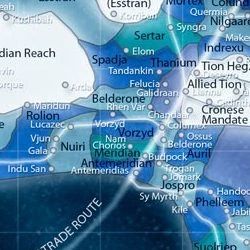
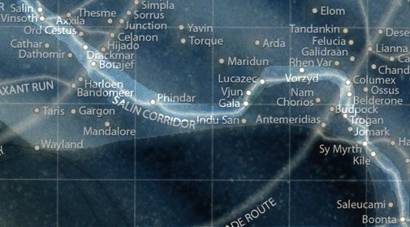

The VORZYD SECTOR is a sector within the Outer Rim in R-6 of the Galactic Standard Grid (Atlas Appendix, p. 241) and is connected to the Salin Corridor hyperroute. In 343 BTC it was part of the Empire. The last great battle in that region was during the Mandalorian Wars at 308 BTC where the planet was in hands of the Republic since and the last known conflict in the region was in 15 ATC during the Second Galactic War (SWTOR: Rise of the Hutt Cartel).

The AURATERA SYSTEM is a binary star system within the Vorzyd sector in the galaxy's Outer Rim region. It is a dual-star system hosting the two suns Aurell and Ryern that are orbited by three planets, including the terrestrial world Auratera. (Nexus of Power, p. 49) It is located at the point R-6 in the Galactic Standard Grid (Atlas Appendix, p. 241) and close to the hyperroute Warriors' Trace/Salin Corridor (Nexus of power, p. 48)
AURELL is the larger star of the Auratera system, along with Ryern, located in the Vorzyd sector of the galaxy. Several planets in the star system pass by AURELL , and the position of the sun to the worlds also has a significant impact on how brightly the worlds are illuminated.
The unusual star system configuration of the Auratera system ensures that the sky of the world Auratera is always brightly illuminated, and night only falls when the star AURELL eclipses the smaller sun Ryern. Apart from that, the amount of sunlight that illuminates Auratera depends on how close the world is to the smaller star. In some cases where both Ryern and AURELL are positioned next to each other, Auratera experiences particularly bright standard days and very warm temperatures, with the world even shining at night. Ryern emits one-third of the light that AURELL does, when the sun is positioned very close to Auratera. (Nexus of Power, p. 49)
RYERN is beside Aurell the smaller star of the Auratera system located within the Vorzyd sector of the known galaxy. Several planets orbit RYERN and the sun's position to these worlds has a significant effect on how strongly these worlds are illuminated.
The unusual star system configuration of the Auratera system ensures that the sky of the world Auratera is always brightly illuminated, and night only falls when the star Aurell eclipses the smaller sun RYERN. Apart from that, the amount of sunlight that illuminates Auratera depends on how close the world is to the smaller star. In some cases where both RYERN and Aurell are positioned next to each other, Auratera experiences particularly bright standard days and very warm temperatures, with the world even shining at night. RYERN emits one-third of the light that Aurell does, when the sun is positioned very close to Auratera. (Nexus of Power, p. 49)
Auratera is close to the oldest hyperroute of the galaxy, the SALIN CORRIDOR. At the time of Auratera's discovery it was still named by its antic name WARRIOR'S TRACE (Nexus of Power, p. 48). Many hyperspace beacons of the Tionese Empire were there too. (StarWars.com).
